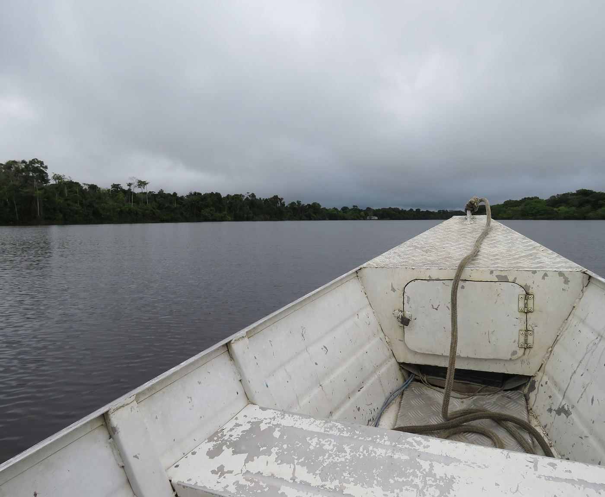
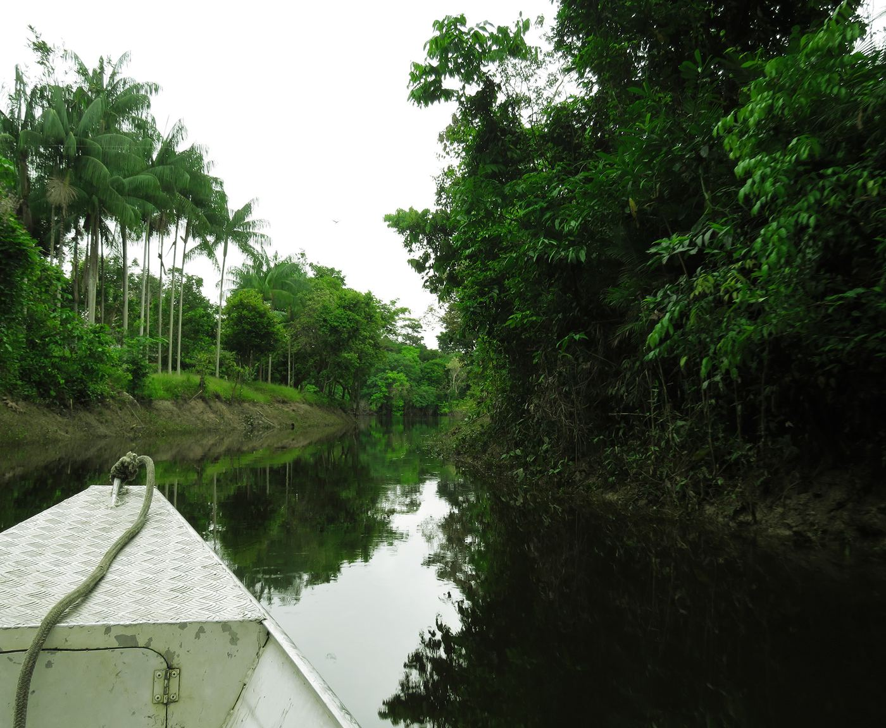
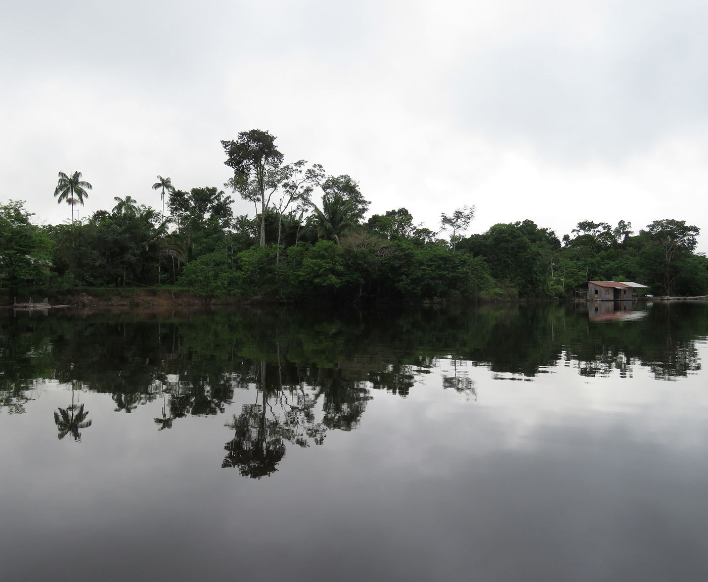
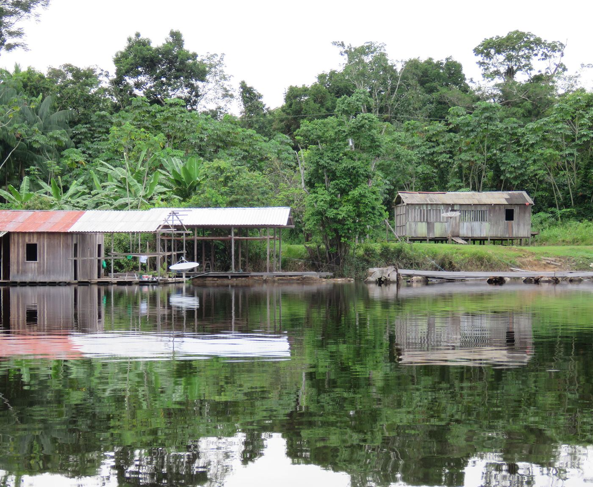
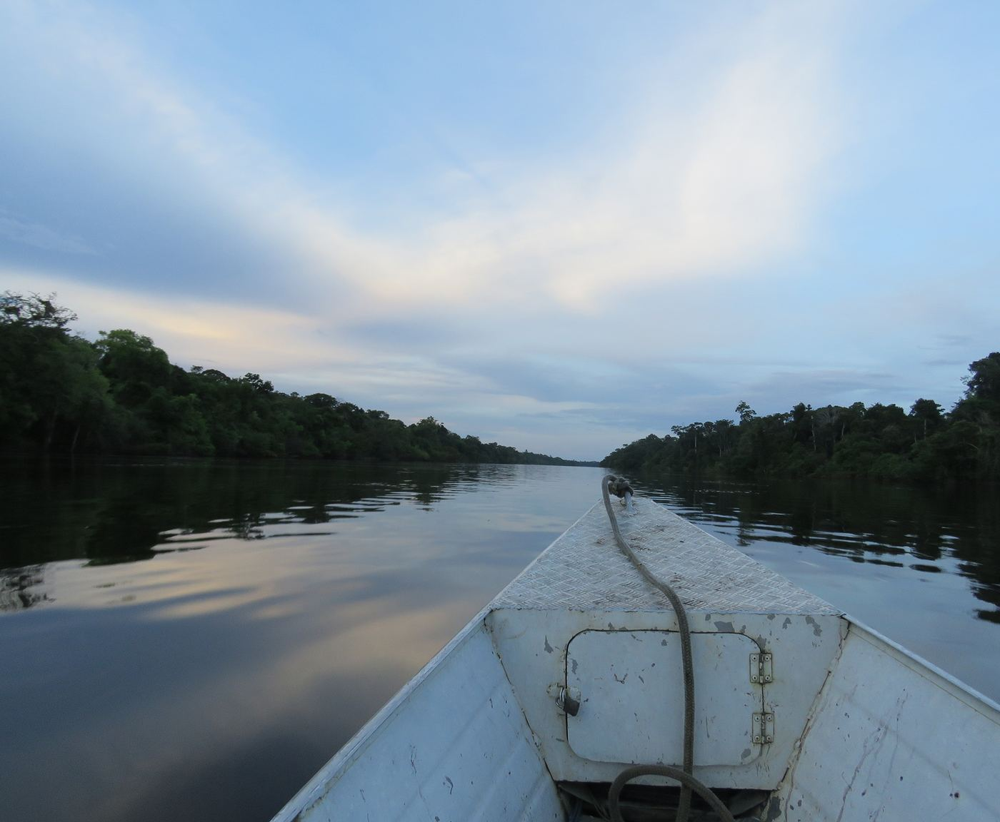

The Rio Madeira Expedition: 24.05.2017 Manicoré River
Today the team went up to Manicoré River, looking for a community called "Mocambo". The site became part of our sampling plan as a consequence of a curious incident. While in the city, we met the leader of the village, Maria* by accident. With her approval, we then decided to visit the Mocambo community, meanwhile offering her a ride back. We arrived at Mocambo around 9 AM, and it took approximately one hour by boat to get there. After meeting the local people, Sr. Antonio* gave us a tour through the forest and showed us some "mature" secondary forests on Terra Preta.
As soon as we defined the area (according to the vegetation context and soil texture and structure), we started sampling, and for our surprise (or not) Pontoscolex corethrurus was there, happily and dominant in the dark soils of this agroforest. After sampling, we spent some time with the local community members to get some insights about the local knowledge, focusing on perceptions on belowground fauna. For our surprise, a delicious awareness was prevalent about earthworms, ants and termites. It was a pleasure to hear about the functions of the biota through the beautiful perspective of the local common sense. Able to distinguish species by their role/s and morphology, showed us a brilliant way to identify the animals and native species. On our way back, Amazonian dolphins everywhere, what a fantastic day. More to come tomorrow.
Luis
*All names used in the wormblog are fictitious




